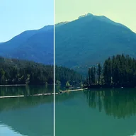

الرفع وغاما والكسب

عجلات ألوان للظلال (الرفع) والدرجات المتوسطة (غاما) والإضاءات (الكسب): درجة اللون، ومقدار دفعه، ومستوى.
إن الرفع وغاما والكسب هي النطاقات النغمية الثلاثة المستخدمة في تدريج اللون: الرفع هو الظلال، وغاما هي الدرجات اللونية الوسطى، والكسب هي الإبرازات. لكلٍّ منها، يختار تدرج اللون لونًا، وتحدد الكمية مدى الدفع نحوه، ويحدد المستوى مدى إضاءة النطاق أو إعتامه.
الإعدادات
| الإعداد | النوع | النطاق | الافتراضي |
|---|---|---|---|
| درجة لون الرفع | زاوية | من 0° إلى 360° | 210° |
| مقدار الرفع | رقم | من 0 إلى 1 | 0.3 |
| مستوى الرفع | رقم | من -1 إلى 1 | 0 |
| درجة لون غاما | زاوية | من 0° إلى 360° | 0° |
| مقدار غاما | رقم | من 0 إلى 1 | 0 |
| مستوى غاما | رقم | من -1 إلى 1 | 0 |
| درجة لون الكسب | زاوية | من 0° إلى 360° | 35° |
| مقدار الكسب | رقم | من 0 إلى 1 | 0.3 |
| مستوى الكسب | رقم | من -1 إلى 1 | 0 |